Introduction
This notebook cover the functionality of the Exploratory Data Analysis 2 section of the GeoDa workbook. We refer to that document for details on the methodology, references, etc. The goal of these notes is to approximate as closely as possible the operations carried out using GeoDa by means of a range of R packages.
The notes are written with R beginners in mind, more seasoned R users can probably skip most of the comments on data structures and other R particulars. Also, as always in R, there are typically several ways to achieve a specific objective, so what is shown here is just one way that works, but there often are others (that may even be more elegant, work faster, or scale better).
For this notebook, we continue to use the socioeconomic data about 55 sub-boroughs in NYC from the GeoDa website. Our goal in this lab is show how to implement exploratory data analysis methods with three or more variables.
Objectives
After completing the notebook, you should know how to carry out the following tasks:
Creating a scatterplot matrix
Adding different types of smoothers to a scatter plot matrix
Creating a bubble plot
Creating a 3d scatter plot
Creating a parallel coordinate plot
Constructing conditional plots
Making graphs interactive
R Packages used
tidyverse: for general data wrangling (includes readr and dplyr)
ggplot2: to draw statistical plots, including conditional plots. We use this rather than base R for increased functionality and more aesthetically pleasing plots (included in tidyverse)
GGally: a ggplot add-on package to create a scatterplot matrix and parallel coordinate plot
scatterplot3d: to create a static 3d scattter plot
plotly: to construct interactive 3d scatter and parallel coordinate plots
R Commands used
Below follows a list of the commands used in this notebook. For further details and a comprehensive list of options, please consult the R documentation.
Base R:
setwd,install.packages,library,head,namestidyverse:
read_csv,rename,selectGGally:
ggscatmat,ggpairs,ggparcoordggplot2:
ggplot,geom_point,xlab,ylab,ggtitle,theme,cut_number,facet_grid,geom_smooth,geom_histogramscatterplot3d:
scatterplot3dplotly:
plot_ly,add_markers,layout
Preliminaries
Before starting, make sure to have the latest version of R and of packages that are compiled for the matching version of R (this document was created using R 3.5.1 of 2018-07-02). Also, make sure to set a working directory, such that the data set is in the right path.2
Load packages
First, we load all the required packages using the library command. If you don’t have some of these in your system, make sure to install them first as well as their dependencies.3 You will get an error message if something is missing. If needed, just install the missing piece and everything will work after that. Note that ggplot2 does not need to be loaded separately since it is included in the tidyverse package collection.
library(tidyverse)## ── Attaching packages ─────────────────────────────────────────────────────────────────────────── tidyverse 1.2.1 ──## ✔ ggplot2 3.0.0 ✔ purrr 0.2.5
## ✔ tibble 1.4.2 ✔ dplyr 0.7.6
## ✔ tidyr 0.8.1 ✔ stringr 1.3.1
## ✔ readr 1.1.1 ✔ forcats 0.3.0## ── Conflicts ────────────────────────────────────────────────────────────────────────────── tidyverse_conflicts() ──
## ✖ dplyr::filter() masks stats::filter()
## ✖ dplyr::lag() masks stats::lag()library(GGally)##
## Attaching package: 'GGally'## The following object is masked from 'package:dplyr':
##
## nasalibrary(scatterplot3d)
library(plotly)##
## Attaching package: 'plotly'## The following object is masked from 'package:ggplot2':
##
## last_plot## The following object is masked from 'package:stats':
##
## filter## The following object is masked from 'package:graphics':
##
## layoutObtaining the data
The data to implement the operations in this workbook are contained in NYC Data on the GeoDa support web site. After the file is downloaded, it must be unzipped (e.g., double click on the file). The nyc folder should be moved to the current working directory for the path names we use below to work correctly.
Creating an initial data frame
We use the tidyverse function read_csv to read the data into a data frame nyc.data. We could also have used the base R read.csv, but read_csv is a bit more robust and creates a tibble, a data frame with some additional information. As usual, we check the contents of the data frame with a head command.
nyc.data <- read_csv("nyc/nyc.csv")## Parsed with column specification:
## cols(
## .default = col_double(),
## bor_subb = col_integer(),
## NAME = col_character(),
## CODE = col_integer(),
## SUBBOROUGH = col_character(),
## RENT2002 = col_integer(),
## RENT2005 = col_integer(),
## RENT2008 = col_integer()
## )## See spec(...) for full column specifications.head(nyc.data)## # A tibble: 6 x 34
## bor_subb NAME CODE SUBBOROUGH FORHIS06 FORHIS07 FORHIS08 FORHIS09
## <int> <chr> <int> <chr> <dbl> <dbl> <dbl> <dbl>
## 1 501 Nort… 501 North Sho… 37.1 34.0 27.4 29.3
## 2 502 Mid-… 502 Mid-Island 28.0 18.1 24.0 31.2
## 3 503 Sout… 503 South Sho… 10.7 12.1 9.69 14.7
## 4 401 Asto… 401 Astoria 52.1 54.0 54.7 47.8
## 5 402 Sunn… 402 Sunnyside… 62.7 69.4 67.1 58.3
## 6 403 Jack… 403 Jackson H… 68.5 68.5 66.5 69.2
## # ... with 26 more variables: FORWH06 <dbl>, FORWH07 <dbl>, FORWH08 <dbl>,
## # FORWH09 <dbl>, HHSIZ1990 <dbl>, HHSIZ00 <dbl>, HHSIZ02 <dbl>,
## # HHSIZ05 <dbl>, HHSIZ08 <dbl>, KIDS2000 <dbl>, KIDS2005 <dbl>,
## # KIDS2006 <dbl>, KIDS2007 <dbl>, KIDS2008 <dbl>, KIDS2009 <dbl>,
## # RENT2002 <int>, RENT2005 <int>, RENT2008 <int>, RENTPCT02 <dbl>,
## # RENTPCT05 <dbl>, RENTPCT08 <dbl>, PUBAST90 <dbl>, PUBAST00 <dbl>,
## # YRHOM02 <dbl>, YRHOM05 <dbl>, YRHOM08 <dbl>Making the variable names compatible
As in the previous exercise, we need to make the variable names compatible with their lower case counterparts in the GeoDa Workbook. Again, we will use the tidyverse rename function to turn the all-caps variables into lower case for the examples we will use. As in the GeoDa workbook, we will use the average people per household in 2000 (hhsiz00), the percentage households with children under 18 in 2000 (kids2000), the average number of years lived in the current residence in 2002 (yrhom02), the percentage households receiving public assistance in 2000 (pubast00), and the median rent in 2002 (rent2002).
nyc.data <- nyc.data %>% rename("hhsiz00" = "HHSIZ00","kids2000" = "KIDS2000",
"yrhom02"="YRHOM02","pubast00" = "PUBAST00",
"rent2002"="RENT2002")
names(nyc.data)## [1] "bor_subb" "NAME" "CODE" "SUBBOROUGH" "FORHIS06"
## [6] "FORHIS07" "FORHIS08" "FORHIS09" "FORWH06" "FORWH07"
## [11] "FORWH08" "FORWH09" "HHSIZ1990" "hhsiz00" "HHSIZ02"
## [16] "HHSIZ05" "HHSIZ08" "kids2000" "KIDS2005" "KIDS2006"
## [21] "KIDS2007" "KIDS2008" "KIDS2009" "rent2002" "RENT2005"
## [26] "RENT2008" "RENTPCT02" "RENTPCT05" "RENTPCT08" "PUBAST90"
## [31] "pubast00" "yrhom02" "YRHOM05" "YRHOM08"Scatter Plot Matrix
A scatter plot matrix visualizes the bivariate relationships among several pairs of variables. The individual scatter plots are stacked such that each variable is in turn on the x-axis and on the y-axis.
Basic scatter plot matrix
A scatter plot matrix is not included in the functionality of ggplot2, but it can be created in a number of ways using the GGally package, which extends ggplot2 with many additional features. Extensive documentation of GGally functionality is available on its Github page.
A quick and dirty scatter plot matrix is created by means of the ggscatmat command (detailed documentation is available on the GGally Github page).
The ggscatmat function provides pairwise scatter plots in a lower diagonal of the graph, a density graph in the diagonal, and the pairwise correlations in the upper diagonal. This contrasts with GeoDa, where all pairwise scatter plots are given, and the diagonal is populated with a histogram for the individual variable (GeoDa currently does not support density plots).
The command is very simple: it takes the data set, the list of variables passed to columns and a few options (color, choice of correlation coefficient). However, it does not seem to contain a way to show a linear or nonlinear smoother. In order to accomplish this, we will need the more powerful ggpairs function (see below).
We follow the example in the GeoDa Workbook and use the four variables hhsiz00, kids2000, yrhom02, and pubast00.
ggscatmat(nyc.data, columns= c("hhsiz00","kids2000", "yrhom02", "pubast00"))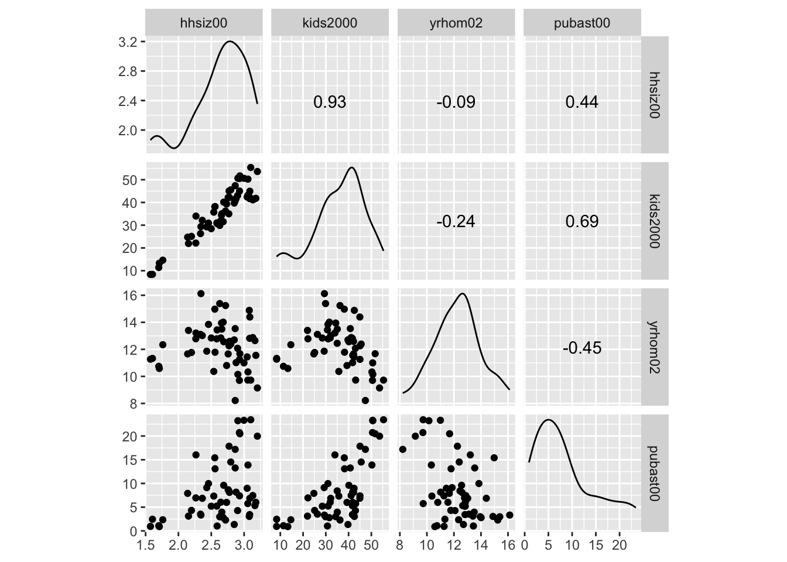
Scatter plot matrix with smoothing
An alternative approach that provides much finer control of the graph can be based on the ggpairs function of GGally (see the GGobi Github page for extensive documentation). As in ggscatmat, this function takes the data set as an argument, followed by the variables specified in the columns argument. The lower and upper triangle part of the matrix, and the diagonal are specified by means of the arguments lower, upper, and diag. The values for these arguments must be passed as a list.
Default scatter plot matrix
First, we illustrate the default setting. We do not need to include the specifics, but they amount to:
lower=list(continuous="points"), for a scatter plot in the lower trianglediag=list(continuous="densityDiag"), for a density plot on the diagonalupper=list(coninuous='cor'), for a correlation coefficient in the upper diagonal
ggpairs(nyc.data, columns=c("hhsiz00","kids2000", "yrhom02", "pubast00"))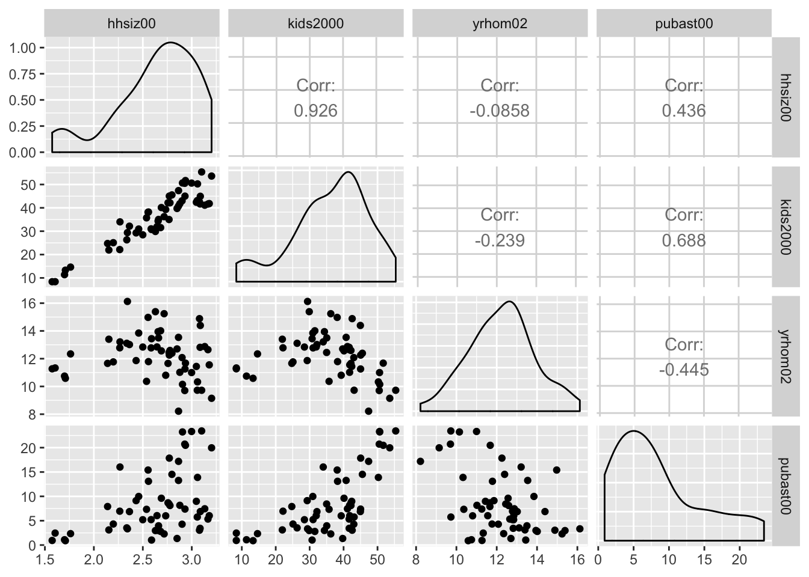
Pairwise scatter plots
In order to obtain a scatter plot in both lower and upper triangles, we set upper = list(continuous="points") in the arguments to ggpairs. In addition, to have histograms in the diagonal, set set diag=list(continuous="barDiag").
ggpairs(nyc.data, columns=c("hhsiz00","kids2000", "yrhom02", "pubast00"),
upper=list(continuous="points"),diag=list(continuous="barDiag"))## `stat_bin()` using `bins = 30`. Pick better value with `binwidth`.
## `stat_bin()` using `bins = 30`. Pick better value with `binwidth`.
## `stat_bin()` using `bins = 30`. Pick better value with `binwidth`.
## `stat_bin()` using `bins = 30`. Pick better value with `binwidth`.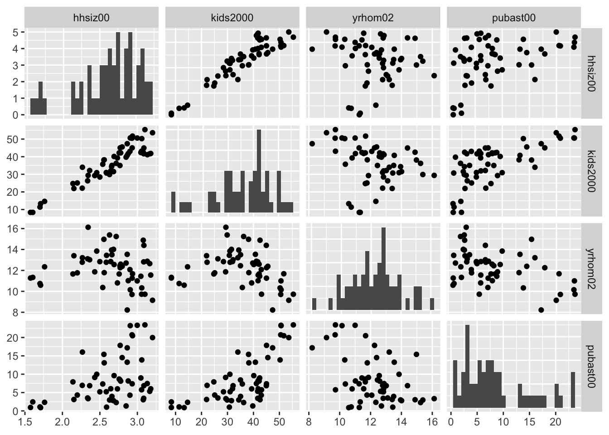
Scatter plot matrix with linear smoother
At this point, we can add a linear smoother by specifying list(continuous="smooth") instead of continuous="points" for both upper and lower parameters (back with the default density plot on the diagonal).
ggpairs(nyc.data, columns=c("hhsiz00","kids2000", "yrhom02", "pubast00"),
upper=list(continuous="smooth"),lower=list(continuous="smooth"))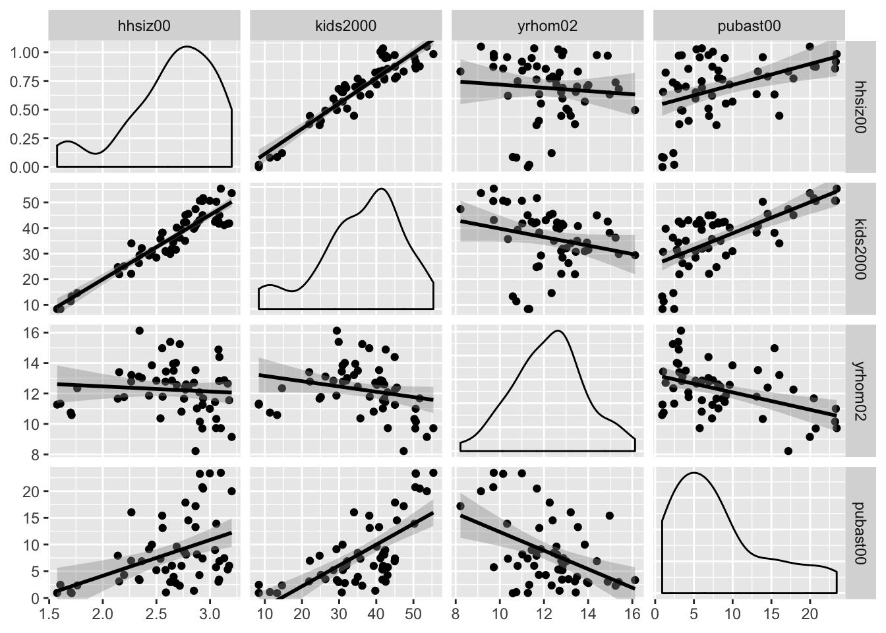
Scatter plot matrix with loess smoother
The ggpairs function also supports a nonlinear loess smoother, but not the LOWESS smoother implemented in GeoDa. In order to include the latter, it would be necessary to create a custom function to pass as an argument to the upper and lower settings. This is beyond our current scope (again, see the GGobi Github page for techical details). Similarly, if one wanted finer control over the parameters of the smoothing method (like setting a span), this must be implemented by means of a custom function.
The loess smoother is passed in the same way as the linear smoother, as an argument to continuous = "smooth_loess".
ggpairs(nyc.data, columns=c("hhsiz00","kids2000", "yrhom02", "pubast00"),
upper=list(continuous="smooth_loess"),lower=list(continuous="smooth_loess"))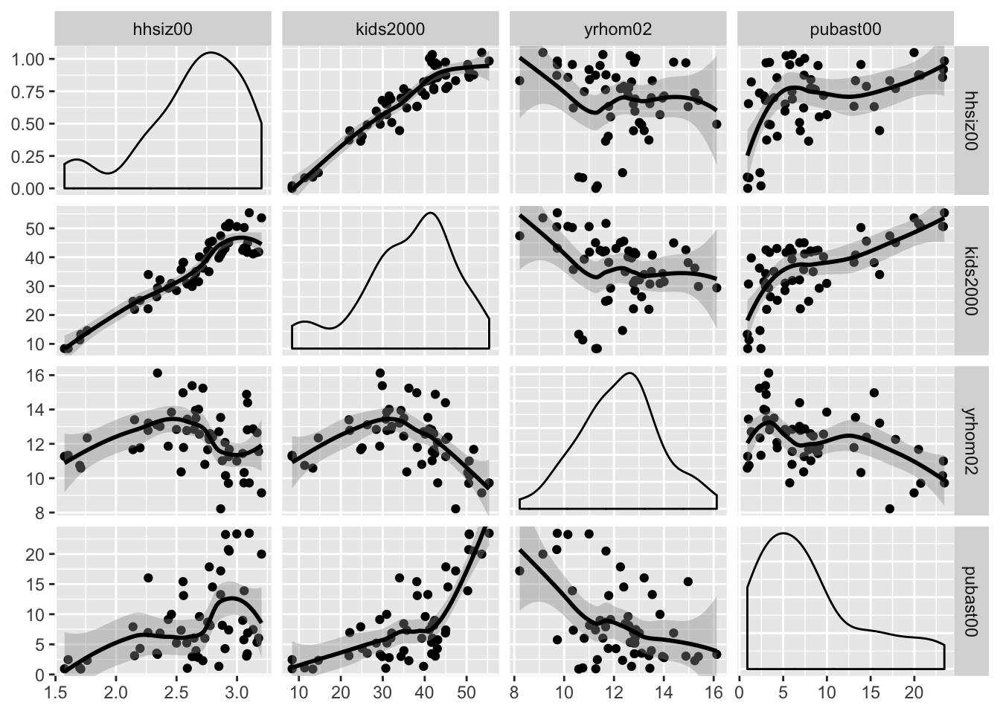
The ggpairs function has many other customization features to deal with axis labels, titles, etc., which we do not further pursue here. As mentioned above, just about anything can be included as a custom function using the ggplot API (for example, using the wrap functionality documented on the Github pages).
Finally, as already alluded to earlier, linking and brushing are not included in the functionality of ggplot. The graphs can be made interactive by means of the plotly package, which we illustrate below for the 3D scatter plot.
Three Variables: Bubble Chart and 3D Scatter Plot
Bubble chart
The bubble chart augments the scatter plot with a third dimension, the size of the point (or, bubble). Optionally, a fourth dimension can be added as the color of the point, but this quickly becomes difficult to discern. In GeoDa, the four dimensions are available by default, with the third and fourth set to the same variable. In ggplot, this is accomplished by setting a third and potentially fourth aesthetic for size and col to a variable.
We first illustrate a bubble chart using the variable kids2000 for the x-axis, pubast00 for the y-axis, and rent2002 for the bubble size. These are passed as arguments to aes. This is followed by the geom_point geom. As before, we can add labels for the x and y axis, as well as a title.
ggplot(data=nyc.data,aes(x=kids2000,y=pubast00,size=rent2002)) +
geom_point() +
xlab("Percent HH with kids") +
ylab("Percent HH with public assistance") +
ggtitle("Bubble Chart") +
theme(plot.title = element_text(hjust = 0.5))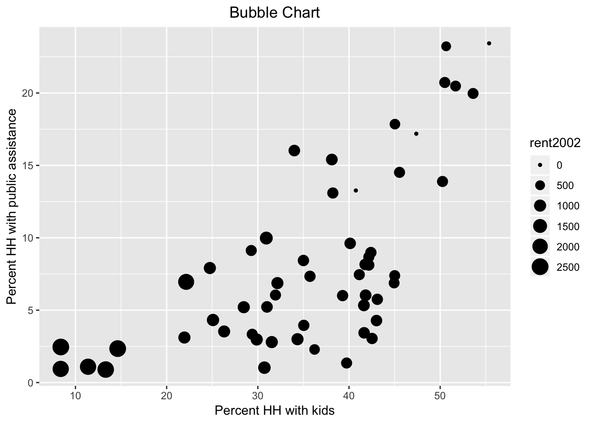
Now, we also introduce the col as rent2002.
ggplot(data=nyc.data,aes(x=kids2000,y=pubast00,size=rent2002,col=rent2002)) +
geom_point() +
xlab("Percent HH with kids") +
ylab("Percent HH with public assistance") +
ggtitle("Bubble Chart") +
theme(plot.title = element_text(hjust = 0.5))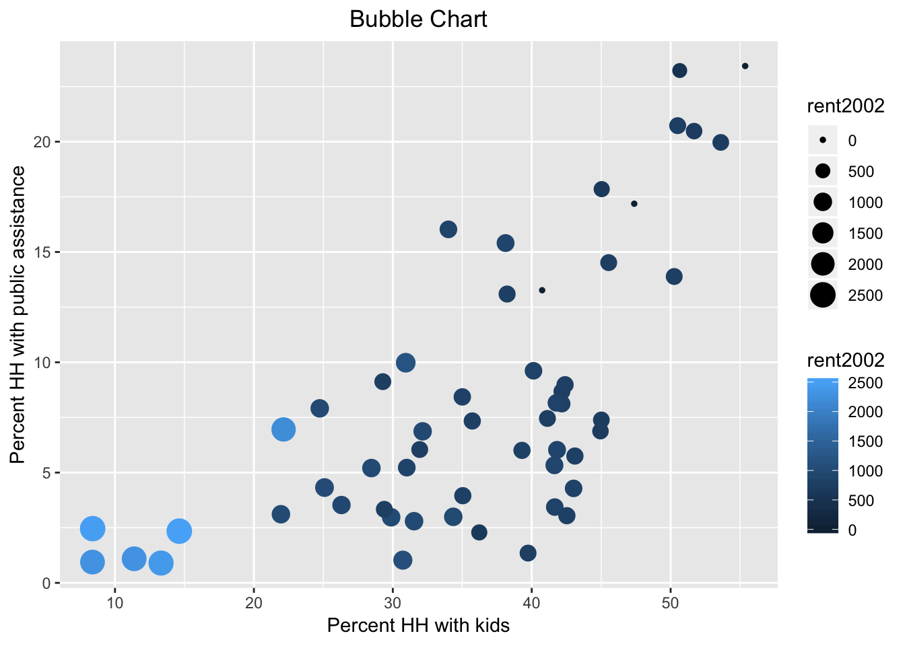
Note that we used the default color bar for the color argument. There is a wide scope for customization of legends and color schemes in ggplot, which is beyond the current scope. In a nutshell, in order to fully mimic the graphs in GeoDa, one would need to use one of the ColorBrewer color schemes, which are available as an option in ggplot.
3D Scatter Plot
Basic 3D scatter plot
The three-dimensional scatter plot is a simple generalization of the two-dimensional case by creating a graph that projects a 3D cube onto the two-dimensional screen (or paper), as a perspective plot. This is not (currently) supported by ggplot, so we resort to the specialized package scatterplot3d (see Ligges and Machler 2003). This is an older package that predates the layered logic of ggplot, and instead uses the approach taken in the base R plot commands.
A rudimentary plot follows from the scatterplot3d function to which the variables for the three dimensions are passed as arguments to x, y, and z. In contrast to ggplot, there is no data argument, but the variables must be specified using the standard $ notation. We again use the variables kids2000, pubast00, and rent2002. In addition, we spiff up the graph a bit by adding a main title, as well as titles for xlab, ylab, and zlab. In addition, we set the symbol to a filled circle (the default is a hollow circle), using the base R pch = 20 argument, and color it red (color = "red"), as in the GeoDa Workbook example. The result is as given below.
scatterplot3d(x = nyc.data$kids2000, y = nyc.data$pubast00, z = nyc.data$rent2002,
main = "NYC 3D Scatterplot",
xlab = "Percent HH with kids",
ylab = "Percent HH with public assistance",
zlab = "Median rent",
pch = 20,
color = "red")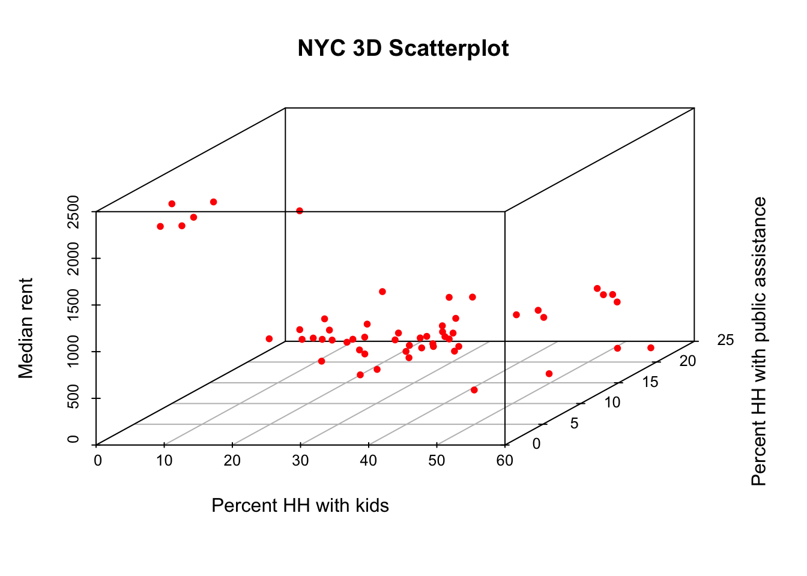
Plotly in a nutshell
The static 3D scatter plot is fine as a traditional graph, but is not that useful for data exploration. To that effect, we will illustrate some functionality contained in the plotly package. This package forms an R interface to the extensive open source Javascript graphing library of the same name, plotly.js, which leverages the extensive collection of D3 charts. The plotly package is just one of several interfaces to plotly. Another commonly used one is Plotly.py for Python.
The functionality in plotly is huge, and much more than we can cover here. We refer to the many web resources for further details. An excellent overview is given in Carson Sievert’s plotly for R book, especially in Chapter 2, The Plotly Cookbook.
There are two main ways to create interactive graphs using plotly. One is to pass the usual arguments to the plot_ly command, which has its own Grammar of Graphics syntax. This uses the concept of traces, which is similar to the layers in ggplot. The second way uses the ggplotly command, which takes one or more ggplot objects and makes them interactive. We will not cover the second approach, but it is a fairly straightforward way to make any of our earlier ggplot graphs interactive.
The basic arguments to plot_ly are the same as for ggplot, i.e., the data set, and the axes (x, y, and for 3D, z). The variable names are passed in a slightly different way, and use the formula notation, with the variable name prefaced by the ~ symbol. So, for example, if the x-axis would map to the variable kids2000, that would be specified as x = ~kids2000, and similarly for the other axes.
Just like ggplot, plotly has a layered approach to constructing a graph, but instead of using a plus sign to separate the layers, a pipe command, %>% is used. Also, the various options for customization are passed to the respective arguments as a list.
We will illustrate the basics of plot_ly by constructing a 3D scatter plot for the same three variables as above.
Interacting with the 3D scatter plot
There are several ways to interact with a plot in plotly, but here we will illustrate some basic functionality to zoom in, zoom out, and rotate the 3D cube, similar to what is available in GeoDa.
We start with a bare bones graph. We pass the data set and the three variables to the plot_ly function. Since the default trace is a scatter plot, this is all we really need to specify.
plot_ly(nyc.data, x = ~kids2000, y = ~pubast00, z = ~rent2002)## No trace type specified:
## Based on info supplied, a 'scatter3d' trace seems appropriate.
## Read more about this trace type -> https://plot.ly/r/reference/#scatter3d## No scatter3d mode specifed:
## Setting the mode to markers
## Read more about this attribute -> https://plot.ly/r/reference/#scatter-modeThere are warnings, but it works. Basically, since we did not specify a trace type, the default scatter3d is applied, which is exactly what we wanted. Also, since no mode is specified, the default is set to markers.
The moment we move the pointer over the graph, a number of small icons appear in the right-hand top. These correspond to different types of interactions that can be carried out. Before we proceed with those, however, we move the pointer to one of the points. The hovering functionality (here left to the default of listing all data dimensions) will list the values for x, y and z in a small box, and draw the projections to each of the axes.
The second left-most icon at the top of the graph invokes the Zoom functionality. Now, moving the pointer back and forth makes the cube smaller or larger. Other interesting options are the Orbital rotation and Turntable rotation, the two icons to the right of the home symbol. Both options move the cube around as the pointer changes position. The left-most icon allows a static version of the plot to be downloaded as a png file.
Next, we illustrate a very simple way to add some further information to the graph. First, we use add_markers to turn the observation points red. Note how the argument marker is set equal to a list to pass the needed color parameter. The add_markers command follows the initial plot_ly setting after a %>% pipe symbol. A final touch is to set titles for the axes, by means of the layout command and the scene option, again after a pipe symbol. The titles are set by means of a list command for each of the three xaxis, yaxis, and zaxis.
At this point, when we execute the command, there are no more warnings. Also, we can interact with the graph in the same way as before.
plot_ly(nyc.data, x = ~kids2000, y = ~pubast00, z = ~rent2002) %>%
add_markers(marker = list(color="red")) %>%
layout(scene = list(xaxis = list(title = "Percent HH with kids"),
yaxis = list(title = "Percent HH with public assistance"),
zaxis = list(title = "Median rent")))True Multivariate EDA: Parallel Coordinate Plot and Conditional Plots
True multivariate EDA deals with situations where more than three variables are considered. We follow the GeoDa Workbook and illustrate the Parallel Coordinate Plot, or PCP, and conditional plots. For the former, we again need to resort to GGally, but for the latter, we can exploit the facet_wrap and facet_grid functions of ggplot. In addition, we can turn these plots into interactive graphs by means of the plotly functionality.
Parallel Coordinate Plot (PCP)
PCP in GGally
The PCP is implemented in the ggparcoord function of GGally. However, its implementation does not follow the regular columns specification we used above for the scatterplot matrix. Instead of passing a list of variable names, the actual column numbers of the variables in the data frame must be specified (but those may be in any order).
An easy, though not very elegant way to deal with this is to create a subset of the data for those variables to be plotted, and then exploit the default of columns = 1:ncol(data). In other words, we don’t have to specify the columns argument at all.
In the example below, we use the same four variables as in the GeoDa Workbook: kids2000, rent2002, pubast00, and yrhom02. We first select those from the nyc.data set to create a subset we call pcp.vars. Then, we pass this subset as the argument to data in ggparcoord. The result is a fairly rudimentary PCP, with the axes organized vertically (in GeoDa, they are horizontal). Many customizations are possible, for which detailed options can be found in the documentation pages.
vars <- c("kids2000","rent2002","pubast00","yrhom02")
pcp.vars <- select(nyc.data,vars)
ggparcoord(data = pcp.vars)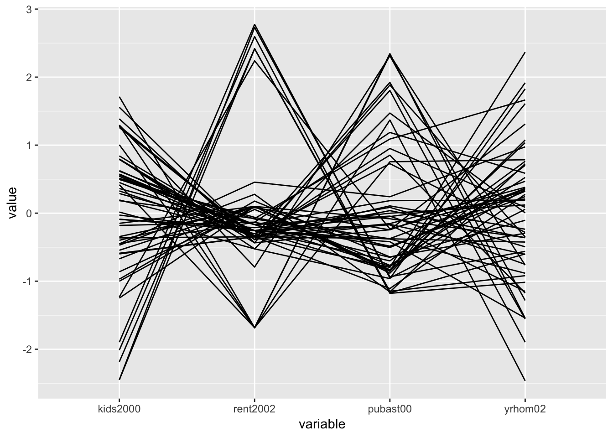
PCP in plotly
In plotly, the PCP functionality in implemented as the type = "parcoords". This is passed as the second argument to the plot_ly function (the first argument, as usual, is the data set, nyc.data). The axes of the PCP are specified through the dimensions argument. As is the case in other plot_ly examples, they are passed as a list. In this instance, this is actually a list of lists, one for each axis. In each of these lists, we include a label for the axis, and a variable as the argument to the values parameter. As before, we need to use a formula format for the variables and precede their names with the ~ symbol.
plot_ly(nyc.data,type = "parcoords",
dimensions = list(
list(label = "Kids", values = ~kids2000),
list(label = "Public Assistance", values = ~pubast00),
list(label = "Rent", values = ~rent2002),
list(label = "Stable", values = ~yrhom02)
)
)Once we move the pointer over the graph, a few icons appear on the top right (but fewer than for the 3D scatter plot). The interaction with the graph is not that intuitive, but once you know what to look for, it is quite powerful. The easiest way to proceed is to click on one of the axes: with the cross hair + symbol placed at any location along an axis, clicking will change the color and select the observations (lines) covered by the small vertical bar (the pointer will turn into an arrow that points up or down, depending on the direction of the selection). Clicking the cross hair in another position on the same axis turns the selection off.
A second interactive feature allows one to change the order of the axes. For example, if we move the pointer to the top of the Stable axis, it changes from a cross hair to a double sided arrow <->. Pressing down on the pointer now lets us move this axis to the left, e.g., to become the third axis. This can be done even while certain observations are selected.
Several options for customization of the PCP graph can be found in the plotly documentation for parcoords.
Conditional Plots
Conditional plots are a major feature of the functionality of ggplot, where they are referred to as facetting, or small multiples. This is implemented in the facet_wrap and facet_grid functions. The main difference between the two approaches is that facet_grid is explicitly two-dimensional. In that aspect, it is the closest matches to the conditional plot design in GeoDa.
There is one major difference between the approach taken in GeoDa and that in ggplot. In GeoDa, the conditioning variables are typically continuous, and different types of classifications can be applied to them to obtain the actual condition. For example, in the GeoDa Workbook illustration, the variables hhsiz00 and yrhom02 are used as conditioning variables for respectively, the x-axis and the y-axis. A classification such as quantiles (e.g., 3 or 2 in the GeoDa Workbook examples) yields the categories for the sub-plots. In ggplot, the conditioning is based on a categorical variable that needs to be available in the data set. The facetting formula does not evaluate functions, so the conditioning categories need to be computed beforehand.
There are three so-called helper functions to make this easy: cut_interval, cut_width, and cut_number. The closest to the median (2 quantiles) conditioning illustrated in the GeoDa Workbook is the cut_number function. We pass the variable, e.g., hhziz00, and the number of categories, say n = 2. This creates the new variable as an R factor, giving the intervals that resulted from the cut.
For example, we create a new variable cut.hhsiz using a quantile classification with two categories (as in the GeoDa Workbook, the variable will be split on the median value), by setting n=2. We need to use the $ notation to ensure that the new variable is added to the relevant data set. Since we only have 55 observations, we can easily list the full set of values to verify. Internally, they are stored as factors (hence, the summary of the Levels at the end of the listing).
nyc.data$cut.hhsiz <- cut_number(nyc.data$hhsiz00,n=2)
nyc.data$cut.hhsiz## [1] (2.72,3.2] [1.57,2.72] (2.72,3.2] [1.57,2.72] [1.57,2.72]
## [6] (2.72,3.2] (2.72,3.2] [1.57,2.72] [1.57,2.72] [1.57,2.72]
## [11] [1.57,2.72] (2.72,3.2] (2.72,3.2] [1.57,2.72] (2.72,3.2]
## [16] (2.72,3.2] [1.57,2.72] [1.57,2.72] [1.57,2.72] [1.57,2.72]
## [21] [1.57,2.72] [1.57,2.72] [1.57,2.72] [1.57,2.72] [1.57,2.72]
## [26] [1.57,2.72] (2.72,3.2] (2.72,3.2] (2.72,3.2] (2.72,3.2]
## [31] (2.72,3.2] (2.72,3.2] [1.57,2.72] (2.72,3.2] [1.57,2.72]
## [36] [1.57,2.72] (2.72,3.2] (2.72,3.2] (2.72,3.2] (2.72,3.2]
## [41] [1.57,2.72] [1.57,2.72] [1.57,2.72] (2.72,3.2] (2.72,3.2]
## [46] (2.72,3.2] (2.72,3.2] (2.72,3.2] (2.72,3.2] [1.57,2.72]
## [51] (2.72,3.2] (2.72,3.2] [1.57,2.72] [1.57,2.72] [1.57,2.72]
## Levels: [1.57,2.72] (2.72,3.2]And, similarly for cut.yrhom:
nyc.data$cut.yrhom <- cut_number(nyc.data$yrhom02,n=2)
nyc.data$cut.yrhom## [1] [8.22,12.4] (12.4,16.1] (12.4,16.1] (12.4,16.1] (12.4,16.1]
## [6] (12.4,16.1] [8.22,12.4] (12.4,16.1] (12.4,16.1] (12.4,16.1]
## [11] (12.4,16.1] [8.22,12.4] (12.4,16.1] (12.4,16.1] (12.4,16.1]
## [16] (12.4,16.1] (12.4,16.1] [8.22,12.4] (12.4,16.1] [8.22,12.4]
## [21] [8.22,12.4] [8.22,12.4] [8.22,12.4] (12.4,16.1] (12.4,16.1]
## [26] (12.4,16.1] (12.4,16.1] [8.22,12.4] [8.22,12.4] [8.22,12.4]
## [31] [8.22,12.4] [8.22,12.4] (12.4,16.1] [8.22,12.4] (12.4,16.1]
## [36] [8.22,12.4] (12.4,16.1] (12.4,16.1] [8.22,12.4] [8.22,12.4]
## [41] [8.22,12.4] [8.22,12.4] [8.22,12.4] [8.22,12.4] [8.22,12.4]
## [46] [8.22,12.4] [8.22,12.4] [8.22,12.4] [8.22,12.4] (12.4,16.1]
## [51] (12.4,16.1] [8.22,12.4] (12.4,16.1] (12.4,16.1] [8.22,12.4]
## Levels: [8.22,12.4] (12.4,16.1]If we compare the breakpoints to the ones in Figure 34 of the Workbook, we see that they are close, but not exactly the same, i.e., 2.72 vs. 2.703 in GeoDa, and 12.4 vs. 12.368. More precisely, upon closer examination, we find that for cut.hhsiz, the lower group has 28 observations vs. 27 in GeoDa. Since we have so few data points, this may lead to slight differences in the graphs.
At this point, we can set up the conditioning in the facet_grid function, expressed as a formula, with the row conditioning variable first. Note that the row conditioning variable is the y-axis in GeoDa, and the column conditioning variable is the x-axis. For example, with our new categories cut.hhsiz and cut.yrhom, this would be facet_grid(cut.yrhom ~ cut.hhsiz).
One final aspect is how the categories are ordered in the graph. The default (as.table=TRUE) is to have the highest category in the lower-right corner. In order to mimic the organization in GeoDa, we set as.table=FALSE. This results in the highest category being in the upper-right corner.
We now illustrate this for a conditional scatter plot and a conditional histogram.
Conditional scatter plot
We replicate the example in the GeoDa Workbook and condition a scatter plot with kids2000 on the x-axis and pubast00 on the y-axis. We set these two variables as x and y in the aes argument of ggplot. Next, we specify the geom as geom_point, for the default scatter plot. Finally, we add the facet_grid command.
ggplot(data=nyc.data,aes(x=kids2000,y=pubast00)) +
geom_point() +
facet_grid(cut.yrhom ~ cut.hhsiz,as.table=FALSE)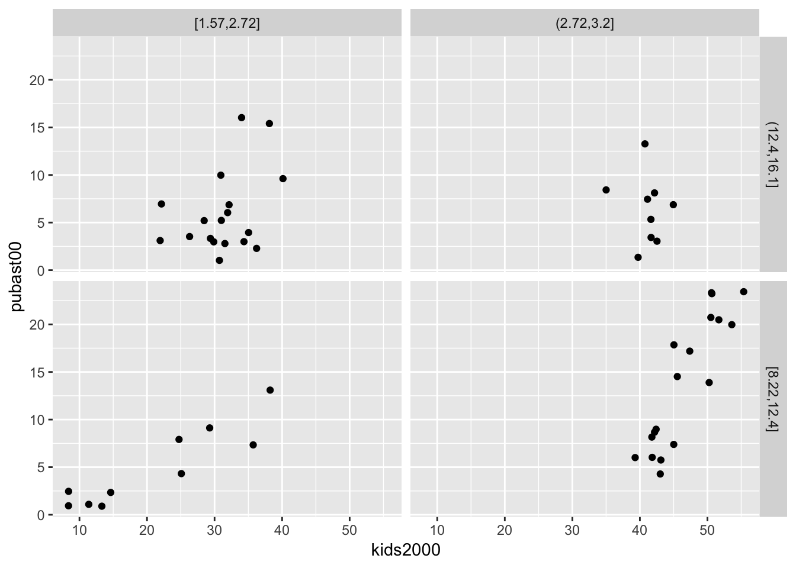
We can add a linear smoother by means of geom_smooth(method="lm"):
ggplot(data=nyc.data,aes(x=kids2000,y=pubast00)) +
geom_point() +
geom_smooth(method="lm") +
facet_grid(cut.yrhom ~ cut.hhsiz,as.table=FALSE)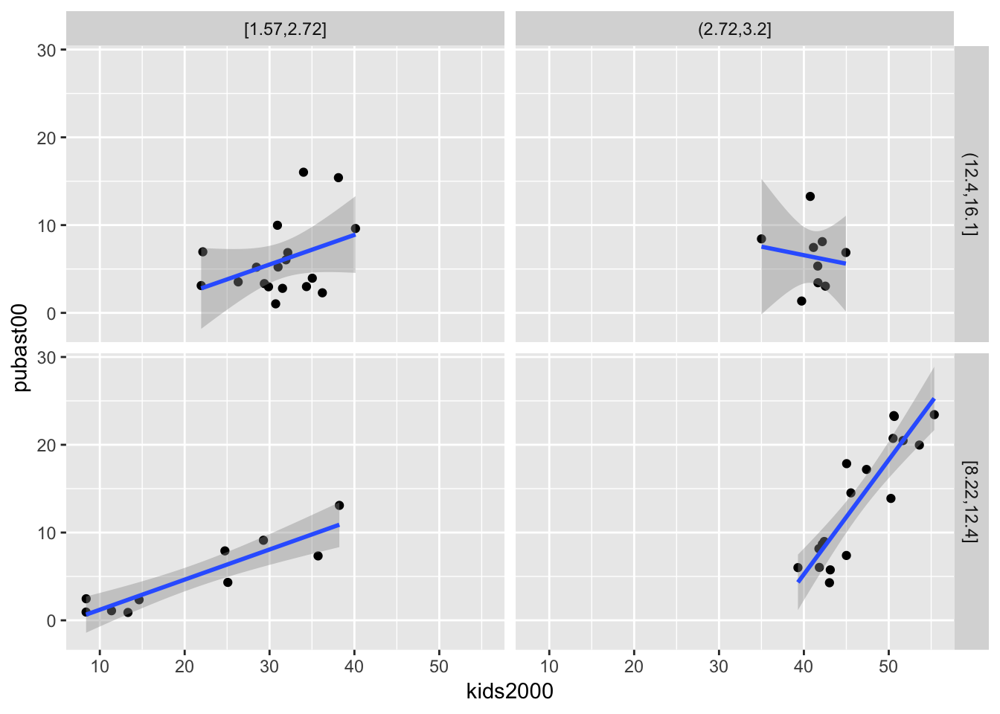
We can also add a loess smoother by means of geom_smooth(method="loess"):
ggplot(data=nyc.data,aes(x=kids2000,y=pubast00)) +
geom_point() +
geom_smooth(method="loess") +
facet_grid(cut.yrhom ~ cut.hhsiz,as.table=FALSE)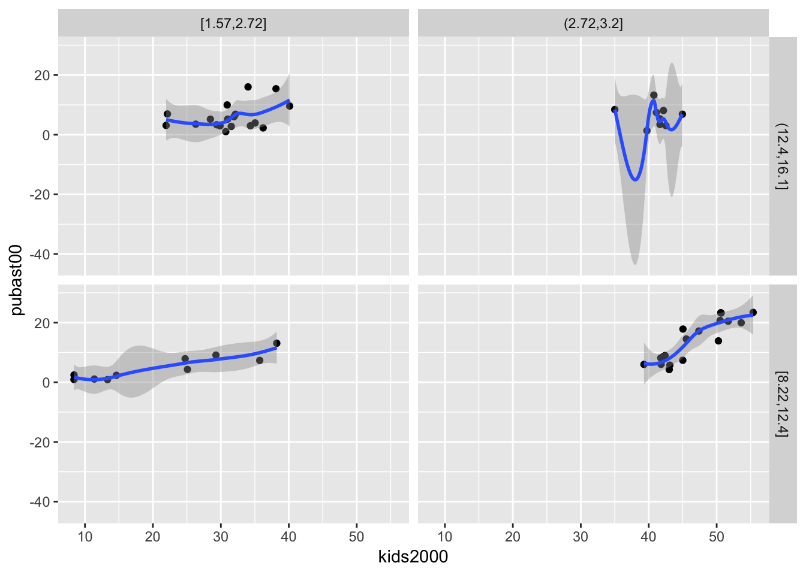
As is the case for all graphs in ggplot, many further customizations can be added, but we do not consider that further.
Conditional histogram
We conclude with a conditional histogram for the variable pubast00. The principle is the same as before. The only difference is that now only one variable needs to be specified in aes, and the geom_histogram is used. As we did earlier, we set the bins=7 (the default of 30 is not appropriate in this example). The resulting graph differs slightly from the example in the GeoDa Workbook due to different bin widths. With some customization, they can be made to look exactly the same, but we won’t pursue that here.
ggplot(data=nyc.data,aes(pubast00)) +
geom_histogram(bins=7) +
facet_grid(cut.yrhom ~ cut.hhsiz,as.table=FALSE)
References
Ligges, Uwe, and Martin Machler. 2003. “Scatterplot3d - an R Package for Visualizing Multivariate Data.” Journal of Statistical Software 8.
University of Chicago, Center for Spatial Data Science – anselin@uchicago.edu,morrisonge@uchicago.edu↩
Use
setwd(directorypath)to specify the working directory.↩Use
install.packages(packagename).↩